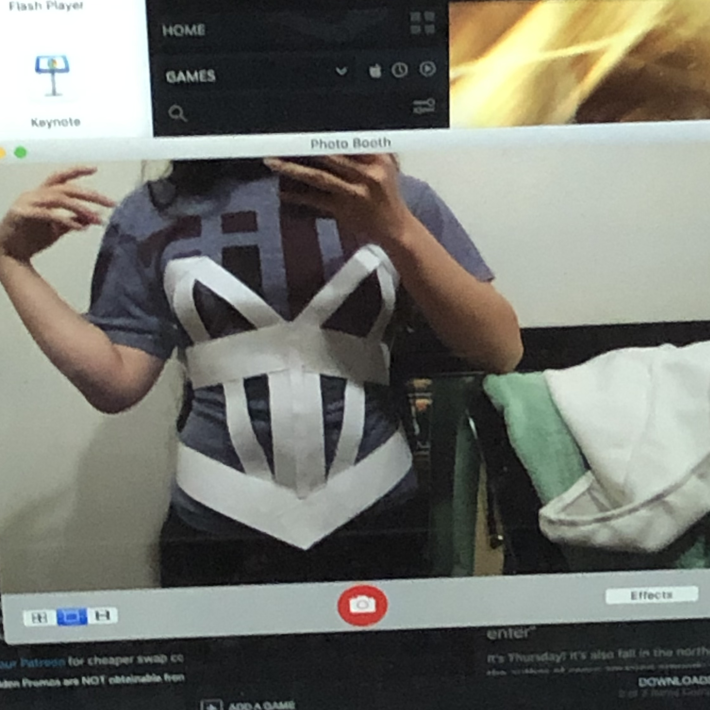
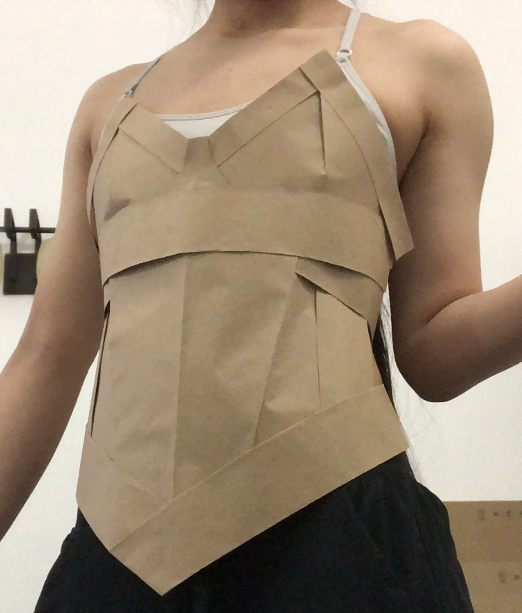

thessal cosplay

I made this project for a cosplay contest, styling the costume after Thessal the Mermaid Goddess. Since I had to source all the materials myself, and did not know of any place nearby to get fabric, I fell back on a familiar material, paper. This was a new challenge, though, as I haven't really made any garment-type projects.
 For the body, I first experimented with strips of printer paper to try and figure out a base/framework. Referencing corset-like tops, I settled on this shape. Then, I worked with sections of wrapping paper that I cut to "fill the gaps." The shape was fine, but I felt that the color was a bit light. So, I redid the process in a darker shade of cardstock and taped that on top. For the gold highlights, I used a gold ribbon. The trident was made by rolling up some of the wrapping paper, with gold tissue paper for the "metal" part. Additionally, I made a small costume for a plush I had, based on the sea mare. For pictures' sake, I made some background coral from construction paper and taped them to the wall.


Construction paper, cardstock; November 2021